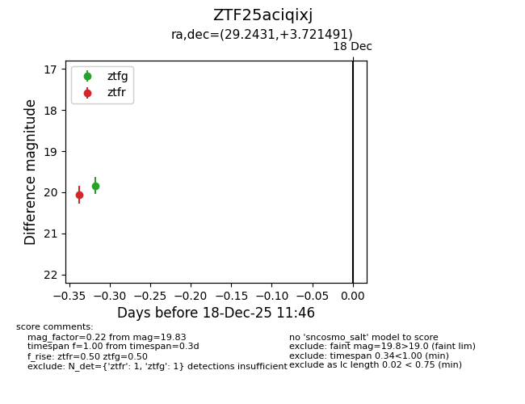
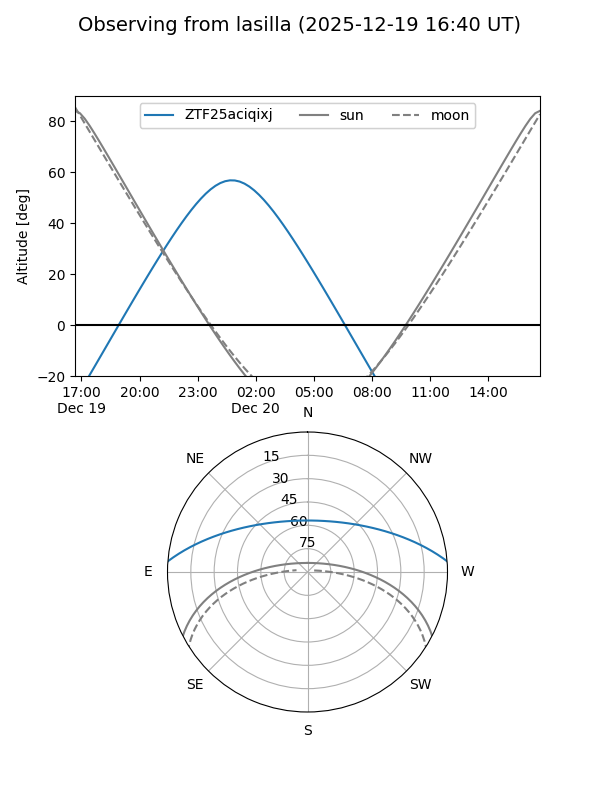
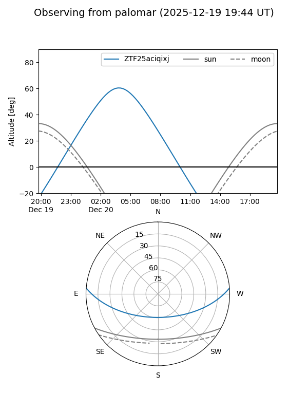
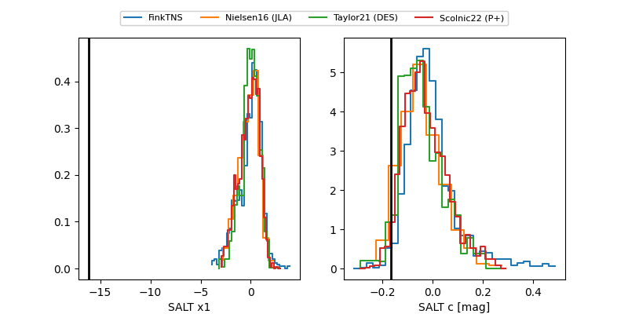

ZTF25aciqixj
Target ZTF25aciqixj at 2025-12-20 03:29
Aliases and brokers:
FINK: fink-portal.org/ZTF25aciqixj
Lasair: lasair-ztf.lsst.ac.uk/objects/ZTF25aciqixj
ALeRCE: alerce.online/object/ZTF25aciqixj
alt names
ZTF25aciqixj (ztf,fink_ztf)
Coordinates:
equatorial (ra, dec) = 29.2431,+3.72149
equatorial (HMS+DMS) = 01:56:58.33,+03:43:17.37
galactic (l, b) = (152.5900,-55.33112)
Flags:
Photometry:
last ztfg=20.02, ztfr=20.06
2 ztfg, 1 ztfr detections
Lightcurve

Visibility


Additional plots
